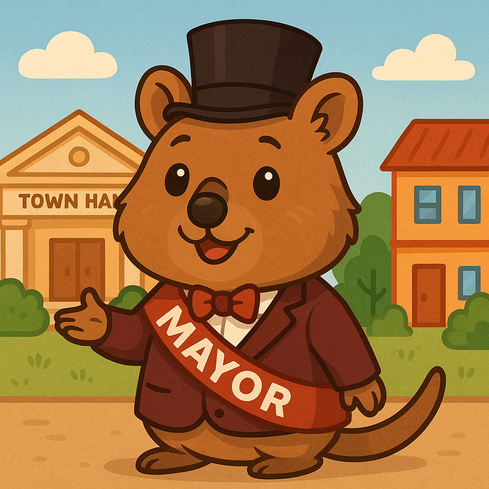
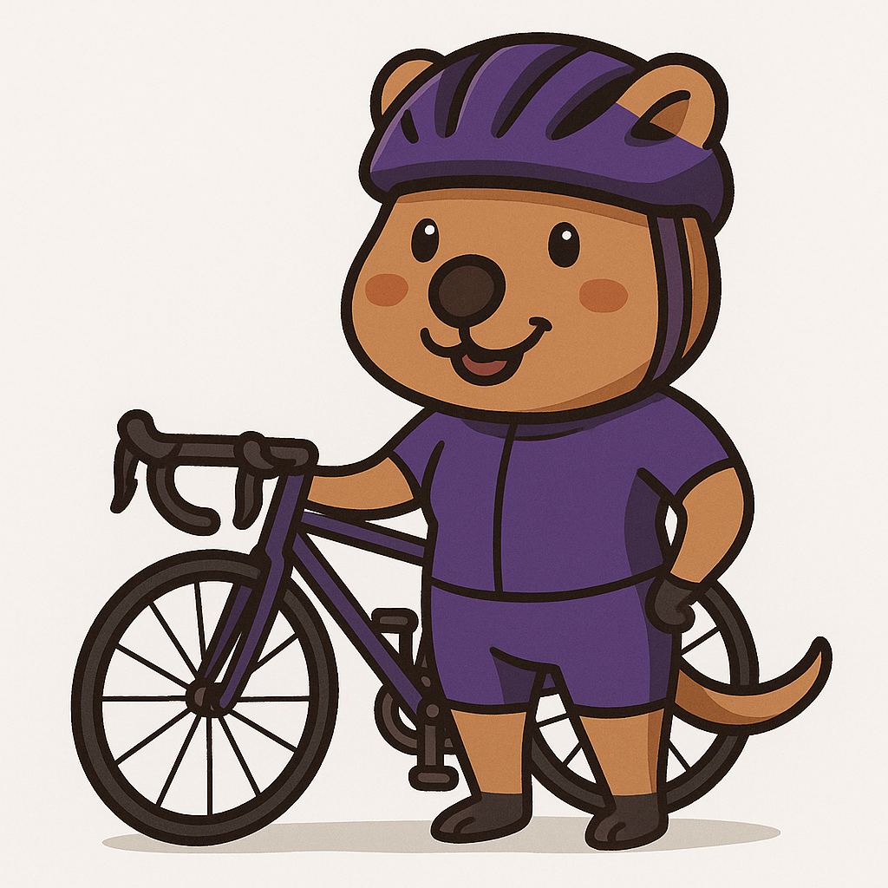
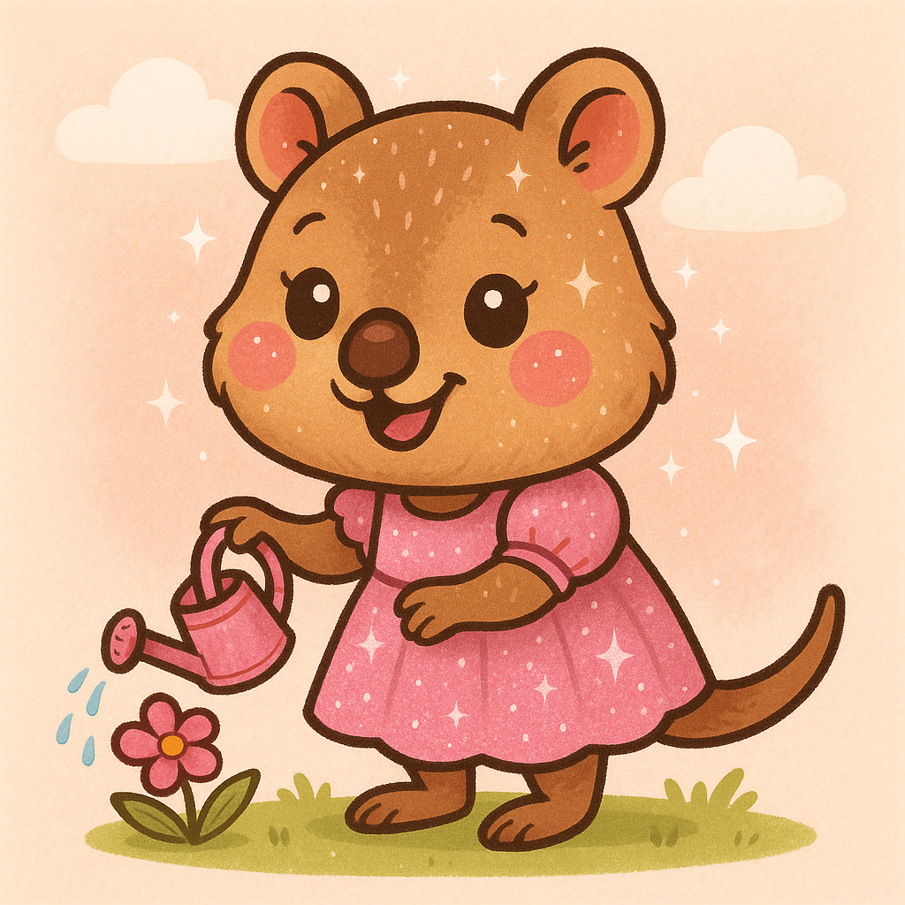
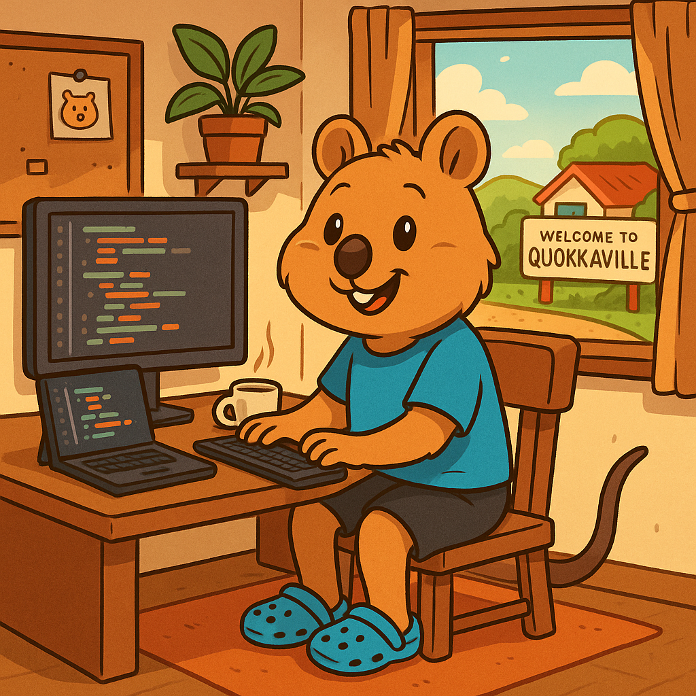
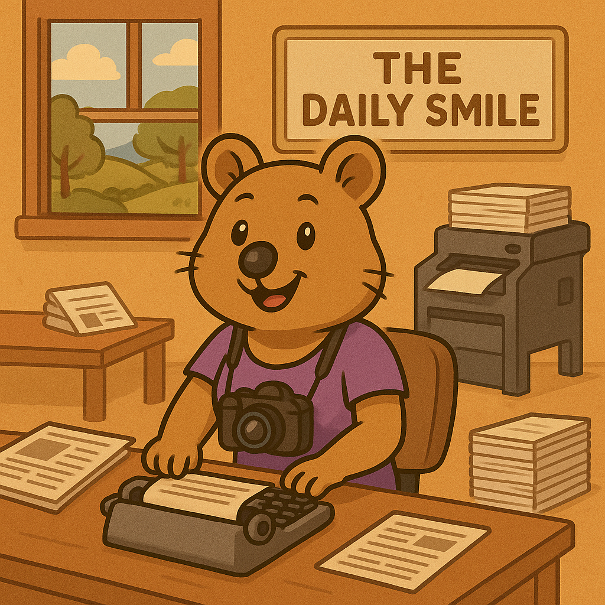

We are the residents of Quokkaville!
Mayor Quincy McQuokka
Mayor Quincy McQuokka has called Quokkaville home since the day he popped out of his pouch, and for the past seven years he’s proudly worn the mayor’s sash (sometimes right over his burgundy jacket). Everything Quincy loves seems to come in shades of burgundy—his house, his wardrobe, even his board game of choice, The Castles of Burgundy. Spot him strolling through town and you’ll know it’s him by the grin, the jacket, and maybe a faint whiff of victory from last night’s board-game marathon.
Patricia "Peddles" Peddlington
Patricia “Peddles” Peddlington is the unstoppable whirlwind of Quokkaville’s cycling scene. With a grin as bright as her bike’s chrome and legs that could outspin a tailwind, she tears through the “Tour de Quokkaville” every year. When she’s not racing, you’ll find her at Peddles’ Bike Shop and Repairs, covered in grease and laughter, tuning up bikes and spirits alike. She swears every bolt has a personality, and every chain hums a story. Folks say you can hear her humming down Main Street long before you see the blur of purple and joy that is Peddles herself.
Sasha McQuokka
Sasha McQuokka is the cheerful six-year-old daughter of Mayor Quincy McQuokka. Every morning, she slips into her favorite pink sparkly dress and heads out to her garden, where rows of daisies and tulips wait for her gentle watering can. She hums while she works, sprinkling each petal like she’s sharing a secret. The townsfolk of Quokkaville often see her skipping down the lane, glitter catching in the sunlight, leaving tiny spark trails behind her. Though she’s small, Sasha’s kindness is well known—flowers seem to bloom brighter under her care, and her laughter makes the whole town feel lighter.
Wesley "Webby" Webster
Wesley “Webby” Webster is Quokkaville’s resident tech genius — and possibly its happiest coder. Every morning, he slips on his favourite blue tee, black shorts, and trusty Crocs before settling into his cozy desk, coffee steaming beside him. Lines of colourful code dance across his monitors as he builds websites for local shops, updates the mayor’s gaming webpage, and keeps the town’s official website running. Outside his window, Quokkaville hums with life — bicycles whizzing by, kookaburras calling from the trees. Webby just grins and keeps typing. After all, in Quokkaville, good code means good vibes.
Nina Newshound
Nina Newshound is the heartbeat of Quokkaville’s favorite paper, The Daily Smile. With a camera around her neck and a notepad in paw, she’s always chasing the next big story—whether it’s Mayor Quincy’s new playground or the mysterious case of the missing muffins. She writes, edits, photographs, and even runs the printing press, all with her signature grin. Locals say you can hear her typewriter clacking before sunrise and smell the ink before breakfast. For Nina, every headline is a chance to spread cheer—and in Quokkaville, good news always travels fast, thanks to its happiest reporter.